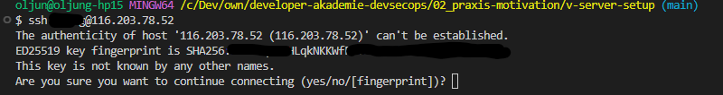
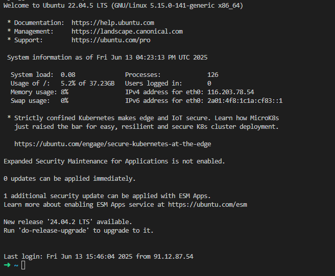
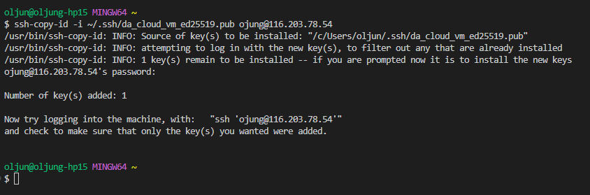
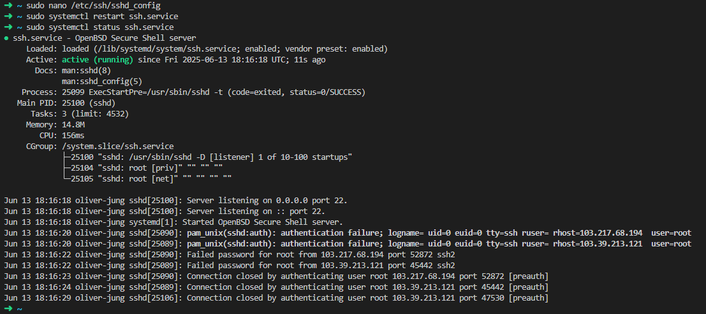
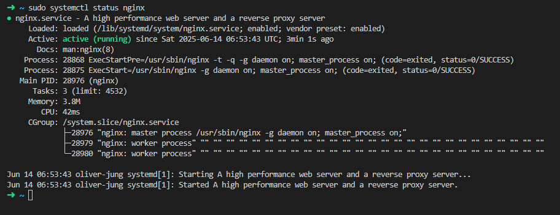
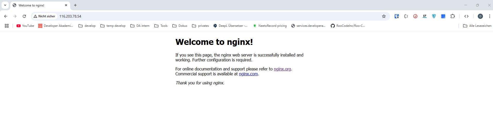
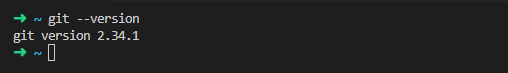
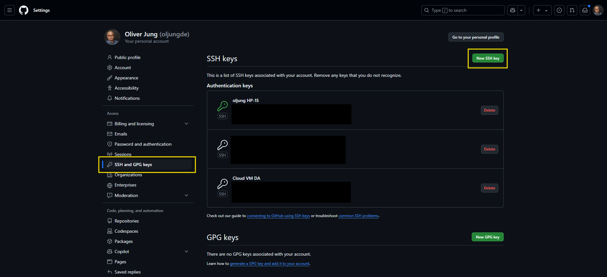

V-Server Setup
Table of Contents
Description assignment
This document guides you through setting up an Ubuntu virtual machine. You will learn how to configure secure access with an SSH key, disable username and password logins, install the Nginx web server, and link the machine with your GitHub account.
Prerequisites
Before you begin this setup guide, please ensure you have the following in place:
- An Ubuntu Virtual Machine: This guide assumes you already have a virtual machine provisioned with a recent version of the Ubuntu Server operating system.
- Server Credentials: You must have the initial access details for your server, including the server's public IP address, a username, and the associated password.
- Sudo/Root Privileges: The user account on the server must have
sudoprivileges to perform administrative tasks. - A Local Machine with an SSH Client: You need a command-line terminal with an SSH client installed (common in macOS, Linux, and modern Windows).
- A GitHub Account: The final section of this guide requires a GitHub account to configure Git access from the server.
Quickstart
Here you will find a brief description of how to set up a preconfigured VM server with an Ubuntu operating system. A detailed description of the individual points can be found in the usage section below.
- First Login and SSH Key Setup:
- Test the initial login via
ssh <your_username>@<your_ip> - Generate a new SSH key locally:
ssh-keygen -t ed25519 - Copy the public key to the server using
ssh-copy-id
- Test the initial login via
- Disable Password Login:
- Edit the
/etc/ssh/sshd_configfile on the server. - Change
PasswordAuthentication yestoPasswordAuthentication no. - Restart the SSH service:
sudo systemctl restart ssh.service
- Edit the
- Install Nginx Web Server:
- Update packages:
sudo apt update - Install Nginx:
sudo apt install nginx -y - Check the status:
sudo systemctl status nginx.service
- Update packages:
- Configure Nginx for an Alternative Start Page:
- Create a new HTML file in a web directory (e.g.,
/var/www/html/web/alternate-index.html). - Create a new Nginx configuration file under
/etc/nginx/sites-enabled/that points to the new page and a different port (e.g., 8081). - Restart Nginx:
sudo service nginx restart
- Create a new HTML file in a web directory (e.g.,
- Set Up Git on the Server:
- Generate a new SSH key on the VM server:
ssh-keygen -t ed25519 - Add the public key (
~/.ssh/<your_file_name>.pub) to your GitHub account.
- Generate a new SSH key on the VM server:
Usage
First login to the server and setting up an SSH key
Test login on the server
- To test the login, try to connect to the server via SSH with your username and password. Open a command
line and use the following command:
Replace the placeholders with your actual login data, e.g.:ssh <your_username>@<your_ip>ssh jdoe@123.456.789.0 - On your first login, you will see a message about the server's authenticity. You need to confirm the
fingerprint by typing
yes.  - After confirming, authenticate with your password. You should now be logged into your server. 
- Congratulations! You can now log out by typing:
logout
Generate an SSH key and deposit it on the server
To generate an SSH key, use a new command line on your local machine.
ssh-keygen -t ed25519The system will ask where to save the new SSH key. You can also secure the key with a passphrase. If you do,
keep it safe. To proceed without a passphrase, just press Enter.
Copy SSH key to VM-Server
- To copy the generated public key to your VM, use the following command on your local machine:
# ssh-copy-id -i <path/to/your/key.pub> <user>@<host> ssh-copy-id -i ~/.ssh/da_cloud_vm_ed25519.pub ojung@116.203.78.54 - You will be prompted to enter your password for the virtual machine one last time. 
- Now, you can log in to the server using your SSH key:
# ssh -i <~/path/to/key> <user@host> ssh -i ~/.ssh/da_cloud_vm_ed25519 ojung@116.203.78.54
Deactivate password login
For security reasons, it is advisable to disable password login on the VM to protect against brute-force attacks.
- Make sure you are logged into the VM. Edit the SSH config file with administrative rights:
sudo nano /etc/ssh/sshd_config - In the nano editor, find the line
#PasswordAuthentication yesand change it toPasswordAuthentication no(remove the#as well). - Save the file with
CTRL+Sand exit withCTRL+X. - Restart the SSH service to apply the changes:
sudo systemctl restart ssh.service - You can check the service status to ensure it's running correctly:
sudo systemctl status ssh.service - To verify that password login is disabled, try to connect with this command:
You should see a "Permission denied (publickey)" message. This is the desired outcome.ssh -o PubkeyAuthentication=no ojung@116.203.78.54
Webserver configuration with nginx
A web server delivers files for a website or web application. This guide uses Nginx, a popular alternative to Apache.
Install nginx
- First, update the package lists on the VM:
sudo apt update - Install Nginx:
sudo apt install nginx -y - Check if Nginx is running:
sudo systemctl status nginx.service - To see it in action, open a browser and navigate to your server's IP address (e.g.,
http://116.203.78.54). You should see the default Nginx welcome page. 
Alternative nginx configuration
- Create a new folder for an alternative site:
sudo mkdir -p /var/www/html/web - Create and edit a new HTML file for this site:
Add some basic HTML content to this file.sudo nano /var/www/html/web/alternate-index.html - Create a new Nginx configuration file for this site:
Enter the following configuration to listen on a new port (e.g., 8081):sudo nano /etc/nginx/sites-enabled/webserver { listen 8081; listen [::]:8081; root /var/www/html/web; index alternate-index.html; location / { try_files $uri $uri/ =404; } } - Restart the Nginx service:
sudo service nginx restart
Git setup
- Check if Git is installed on the server:
git --version.  - Create a new SSH key on the VM server specifically for Git:
ssh-keygen -t ed25519 - Display the public key and copy its content:
cat ~/.ssh/<your_file_name>.pubWARNING
For security reasons, always use the file with the.pubfile extension. - In your GitHub account, go to
Settings > SSH and GPG keysand add the new public key.  You can now work with your Git repositories on the VM server.
Publication of this documentation as a website (Optional)
This section describes how to serve this documentation as a live website using Nginx.
- Create a new folder for the project:
sudo mkdir /var/www/html/web/vm-setup - Navigate into the new folder and clone the repository:
cd /var/www/html/web/vm-setup sudo git clone https://github.com/oljungde/v-server-setup.git . - Edit the Nginx configuration file (
/etc/nginx/sites-enabled/web) to act as a reverse proxy:server { listen 80; listen [::]:80; server_name _; location / { proxy_pass http://127.0.0.1:8081; proxy_set_header Host $host; proxy_set_header X-Real-IP $remote_addr; } } server { listen 8081; listen [::]:8081; root /var/www/html/web; index index.html alternate-index.html; location / { try_files $uri $uri/ =404; } } - Delete the default Nginx configuration to avoid conflicts:
sudo rm /etc/nginx/sites-enabled/default - Restart Nginx one last time:
The documentation should now be available atsudo systemctl restart nginx.servicehttp://<your_ip>/vm-setup/.